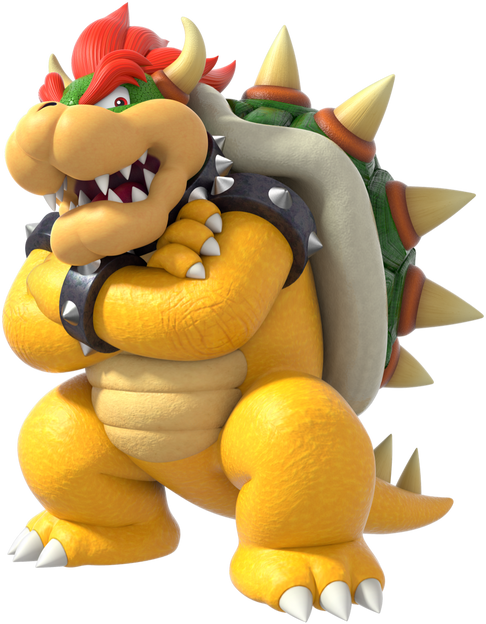

El héroe principal del Reino Champiñón. Mario es muy positivo y siempre está alegre. Lo podrás reconocer por sus overoles de color azul, su gorra roja y su característico bigote.
La princesa Peach lo considera su amigo de confianza, y todo el mundo los conoce a él y a su hermano Luigi por sus actos de valentía.
Mario se destaca en deportes como tenis, golf, béisbol, fútbol y hasta en las carreras de karts. ¡Es bueno en todos los deportes! Es plomero de profesión, pero la verdad es que es un experto en todos los oficios.
Mario utiliza su poderosa habilidad para saltar y una gran cantidad de mejoras para enfrentarse a su archienemigo, Bowser.
Luigi
Hermano de Mario y héroe del Reino Champiñón. Luigi es reconocido instantáneamente por su gorra y camisa de color verde.
Luigi es amable, pero un poco de nervioso, especialmente si hay fantasmas por ahí. Sin embargo, sus habilidades igualan las habilidades de Mario, así que cuando estos hermanos se unen, no hay nada que no puedan lograr.
Luigi es más alto y puede saltar más alto que Mario. Si pones atención, también podrás notar que la forma de su bigote también es un poco diferente.
Princesa Peach
La querida princesa del Reino Champiñón. Es extremadamente amable y siempre está trabajando para crear un mundo en el que todos puedan convivir juntos y felices. Su famoso vestido color rosa es encantador.
La princesa Peach siempre está lista para participar en una gran variedad de deportes, y también le encanta hornear y cocinar.
Ella y Mario son muy buenos amigos y siempre están dispuestos a ayudarse mutuamente cuando pueden.
Toad
Residente del Reino Champiñón, trabaja al servicio de la Princesa Peach. Toad tiene manchas rojas en la cabeza, aunque otros de su especie vienen en una variedad de colores.
Toad es muy alegre y leal. Hace todo lo posible por ayudar a Mario y a Luigi en sus esfuerzos por proteger el Reino Champiñón de Bowser, incluso si eso significa enfrentarse al peligro durante en el proceso.

Bowser
El rey de los Koopas. Bowser es el archienemigo de Mario y siempre está causando estragos en el Reino Champiñón.
Bowser cuenta con muchos secuaces que incluyen a los Koopas, Goombas, Bill Bala y Shy Guys. Cada vez que le pone la mirada al Reino Champiñón sus planes se ven frustrados por Mario y sus amigos.
Este poderoso enemigo posee una gran fuerza y hasta puede escupir fuego.
Donkey Kong
El rey de la jungla, se distingue por una corbata roja con sus iniciales.
Donkey Kong puede lanzar gigantescos barriles con la mayor facilidad, y su fuerza es tan grande que el suelo tiembla cada vez que lo golpea.
Le encantan los plátanos y siempre guarda con una gran cantidad en su hogar.